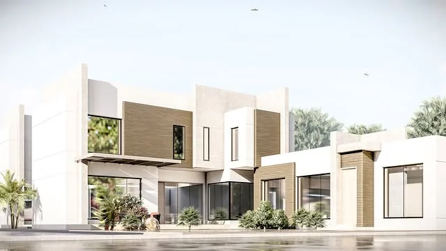
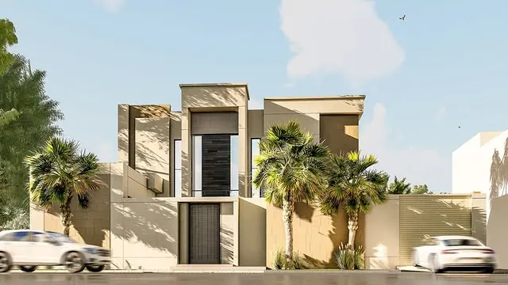

طوبا للاستشارات الهندسية
فسحة للحياة.وصياغة للمكان.
تصميم معماري يفتح للمساحات آفاقاً جديدة.


مسكن بفناء داخلي، عنيزةتفاصيل المشروع
التصميم المعماري
مساحات تتوازن فيها الفكرة مع الاستخدام.
استكشف الخدمةالتصميم الداخلي
تفاصيل تمنح المكان شخصيته.
استكشف الخدمةالتصميم الإنشائي
أساس هندسي للفكرة المعمارية.
استكشف الخدمةإدارة المشاريع
تنسيق يحافظ على وضوح العمل.
استكشف الخدمةطوبا
عن قرب.
طوبا للاستشارات الهندسية في عنيزة، يقدم التصميم المعماري والإنشائي والداخلي، إلى جانب إدارة المشاريع والإشراف الهندسي.
تعرّف على المكتب والبروفايل